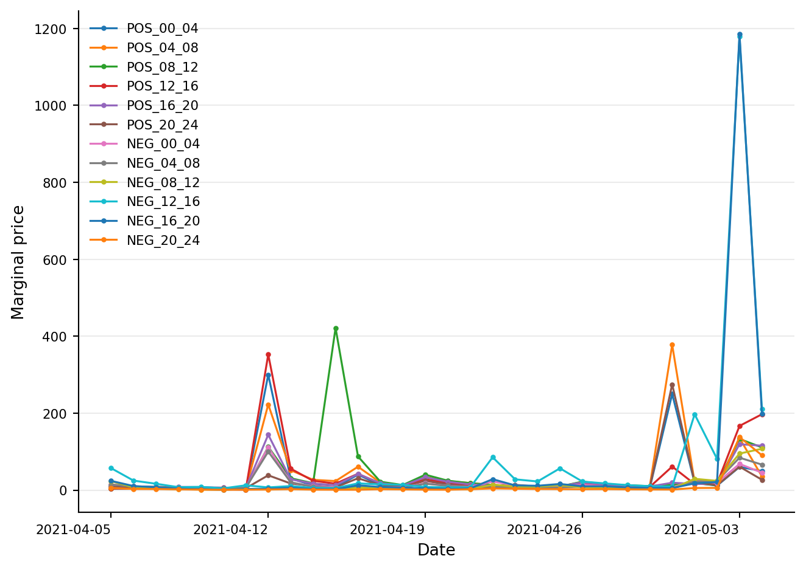
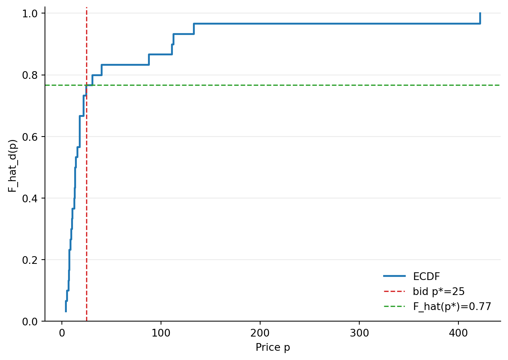
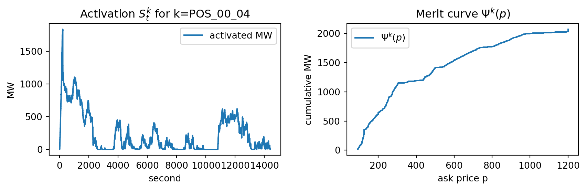
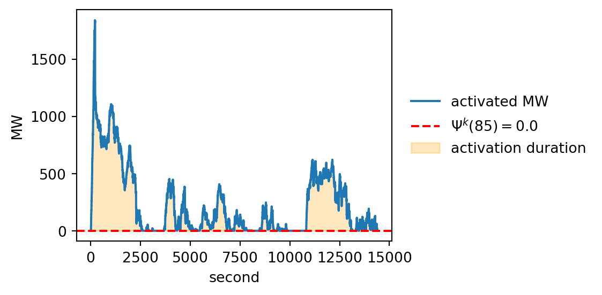

Data setup
This example walks through how to recreate the bidding structure presented in Table 1 for May 5, 2021 (Gärtner, 2022):
| Product | RCM POS | RCM NEG | REM POS |
|---|---|---|---|
| 00_04 | (100, 10) | (25, 10) | (85, 10) |
| 04_08 | (225, 10) | (250, 10) | (85, 10), (95, 10) |
| 08_12 | (250, 10) | (250, 10) | (95, 10) |
| 12_16 | (225, 10) | (250, 10) | (75, 10) |
| 16_20 | (50, 10) | (250, 10) | (85, 10) |
| 20_24 | (25, 10) | (250, 10) | (95, 10) |
Bids (configuation)
In config_tab1.yaml define:
Available flexibility [MW]: \[ m^{\mathrm{RC}}=10, \quad m^{\mathrm{RE}}=10 \]
Bid prices for scenario \(i\) [€]: \[ p_i^{\mathrm{RC}} = \{25, 50, 100, 225, 250\}, \quad p_i^{\mathrm{RE}} = \{25, 35, 45, 75, 85, 95\} \]
Acceptance probabilities (RCM)
For each bidding scenario, the acceptance probability \(q_i^{\mathrm{RC}, k}\) denotes the probability that the corresponding bid is the highest accepted bid. This probability is estimated by comparing the bid price against the historical daily marginal prices for product \(k\) on day \(d\), denoted by \(\pi_d^{\mathrm{RC}, k}\).
Data on the short-term distribution of daily marginal prices over the previous 30 days are obtained from (Regelleistung n.d.b). For a bid submitted on May 5, 2021, this distribution is as follows:
To estimate the acceptance probabilities, we construct an empirical cumulative distribution function (ECDF) from the daily marginal prices observed over the last 30 days. For any bid price \(p\) the ECDF gives the proportion of historical observations for which the daily marginal price \(\pi_d^{\mathrm{RC}}\) is less than or equal to \(p\).
The ECDF for the last \(d=30\) days is defined as: \[ \widehat{F_d}(p)=\frac{1}{30} \sum_{j=1}^{30} 1_{\pi_{d-j}^{R C, k} \leq p} \]
Example of \(\widehat{F_d}(p)\) for product “POS_08_12” and how to read when e.g. bid price = 25 €/MWh:

Probability that exactly the first i offers are accepted: \(q_i = \mathrm{P}(\pi > p_i)\). \[\begin{equation} \begin{aligned} q_0^{\mathrm{RC}, \mathrm{k}} & =\widehat{\mathrm{F}_{\mathrm{d}}}\left(\mathrm{p}_1\right) \\ q_1^{\mathrm{RC}, k} & =\widehat{F_d}\left(p_2\right)-\widehat{F_d}\left(p_1\right) \\ q_2^{\mathrm{RC}, k} & =\widehat{F_d}\left(p_3\right)-\widehat{F_d}\left(p_2\right) \\ & \vdots \\ q_N^{\mathrm{RC}, k} & =1-\widehat{F_d}\left(p_N\right)\end{aligned} \end{equation}\]
Computed for this example:
| i=0 | i=1 | i=2 | i=3 | i=4 | i=5 | |
|---|---|---|---|---|---|---|
| p_i | nan | 25.00 | 50.00 | 100.00 | 225.00 | 250.00 |
| q_i | 0.77 | 0.07 | 0.03 | 0.10 | 0.00 | 0.03 |
Activation time (REM)
For a fixed day
- \(S^k_t\) is the reserve energy activation amount [MW] at second \(t\) and product \(k\) obtained from (Netztransparenz n.d.)
- \(\Psi^k(p)\) is the sum of offered capacity in MW for product \(k\) from all offerrs with an ask price at most \(p\). This can be viewed as the the total capacity activated by the TSO before offer with ask price \(p\) will be activated. Obtained from (Regelleistung n.d.a)
The aFRR activation duration for product \(k\) and bid price \(p\) is denoted \(L^k (p)\):
\[\begin{equation} L^k(p)=\sum_{t \in k} 1_{S_t^k \geq \Psi^k(p)} \end{equation}\]
For product “POS_00_04”:


Activation duration L^k(85): 14,400 seconds
25 14400.000000
35 14400.000000
45 14400.000000
75 12563.166667
85 8484.266667
95 6233.600000
Name: mean_duration_sec, dtype: float64References
Netztransparenz. n.d. “Data in Second Resolution (aFRR Target Values).” Accessed March 17, 2025. https://www.netztransparenz.de/en/Balancing-Capacity/Balancing-Capacity-data/Data-in-second-resolution.
Regelleistung. n.d.a. “RESULT_LIST_ANONYM_ENERGY_MARKET_aFRR_2021.” Accessed March 17, 2025. https://www.regelleistung.net/apps/datacenter/tendering-files/?productTypes=aFRR&markets=ENERGY&fileTypes=ANONYMOUS_LIST_OF_BIDS&dateRange=2021-01,2021-12.
———. n.d.b. “RESULT_OVERVIEW_CAPACITY_MARKET_aFRR_2021.” Accessed March 17, 2025. https://www.regelleistung.net/apps/datacenter/tendering-files/?productTypes=aFRR&markets=CAPACITY&fileTypes=RESULTS&dateRange=2021-01,2021-12.